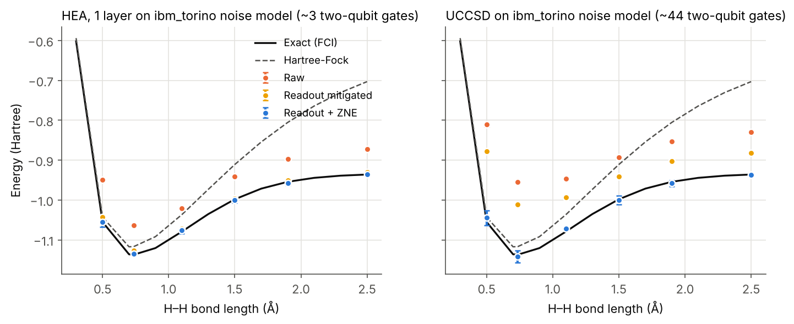
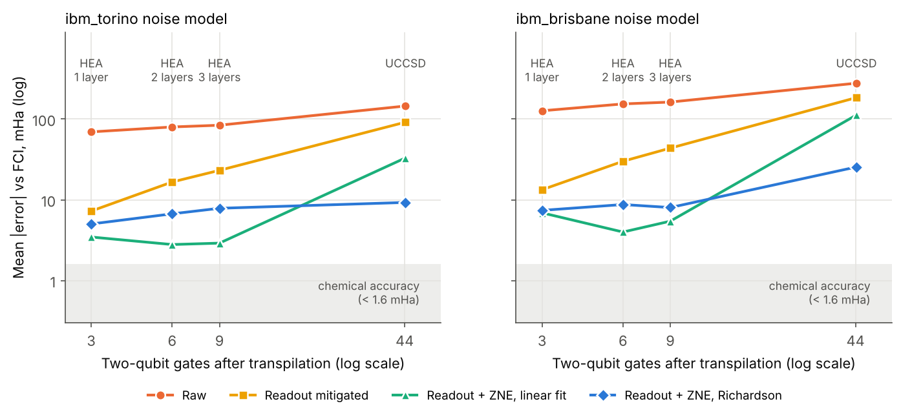
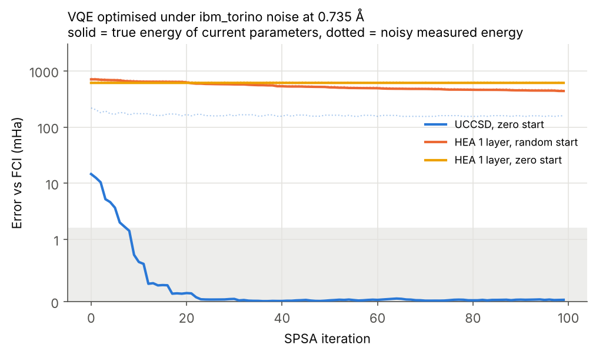
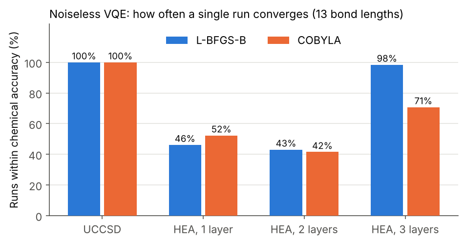

How accurately can the Variational Quantum Eigensolver find the ground-state energy of H₂, and what actually limits it: the ansatz, the optimizer, the hardware noise, or the error mitigation? I built a benchmark that measures each one separately, against the exact answer at every bond length.
80 → 2.8mHa mean error, raw → readout + ZNE (HEA, ibm_torino model)
0.03mHa: UCCSD parameters found by SPSA under noise, vs exact
3 vs 44two-qubit gates: shallow HEA vs UCCSD after routing
1.8–1.9×more raw error on Eagle (ibm_brisbane) than Heron (ibm_torino)
Scope: the noisy results use IBM's published device noise models (qiskit-ibm-runtime fake backends built from real calibration data), transpiled to each device's real coupling map and native gates. They are simulations, not runs on physical hardware. The pipeline targets real hardware by swapping one backend object.
Demo
Error mitigation in action: raw → readout mitigated → zero-noise extrapolated, on the ibm_torino noise model.Training under noise: what SPSA measured vs the true energy of its parameters.
Key findings
On noisy hardware, a shallow circuit beats a "better" ansatz. UCCSD needs only 3 parameters, but after routing on heavy-hex hardware it costs about 44 two-qubit gates, against 3 for a 1-layer hardware-efficient ansatz (HEA). After readout mitigation on the ibm_torino model, the error was 92 mHa for UCCSD and 7 mHa for HEA.
Mitigation removes most of the error, but not all of it. Readout mitigation plus zero-noise extrapolation cut the best configuration from 80 to 2.8 mHa. Only half of those estimates reached chemical accuracy (1.6 mHa), and no configuration got there reliably.
The right ZNE extrapolation depends on depth. A linear fit was best for shallow circuits. For 44-gate UCCSD it left 33 mHa of error, while Richardson extrapolation brought it to 9 mHa, at the cost of wider error bars.
Noise moves the energy, not the minimum. SPSA optimized UCCSD using only noisy measurements and found parameters within 0.03 mHa of exact. The remaining 13 mHa of measured error comes from the hardware, not the algorithm.
Hardware-efficient ansätze are expressive but hard to train. Without noise, single HEA runs got stuck 48–58% of the time at 1–2 layers. At all-zero parameters the HEA sits on a flat saddle 613 mHa above the ground state, which SPSA could not leave. UCCSD converged in every run.
Results

The H₂ dissociation curve on the ibm_torino noise model. Points are the mean of 3 repeats (10,000 shots each), with error bars showing ±1 standard deviation. Mitigated HEA results track the exact curve; UCCSD needs ZNE to get close.

Error grows with two-qubit gate count, and each mitigation layer lowers it. Linear ZNE wins for shallow circuits; Richardson wins for deep ones.
Mean absolute error vs exact (mHa), 18 estimates per row
Device model
Ansatz
2Q gates
Raw
Readout
+ ZNE linear
+ ZNE Richardson
ibm_torino
HEA 1 layer
3
69.4
7.3
3.5
5.0
ibm_torino
HEA 2 layers
6
79.9
16.6
2.8
6.7
ibm_torino
HEA 3 layers
9
84.0
23.2
2.9
7.9
ibm_torino
UCCSD
44–46
145.2
91.7
33.1
9.3
ibm_brisbane
HEA 1 layer
3
126.7
13.3
6.9
7.4
ibm_brisbane
HEA 2 layers
6
154.1
30.0
4.0
8.7
ibm_brisbane
HEA 3 layers
9
162.5
43.7
5.4
8.0
ibm_brisbane
UCCSD
44–46
278.4
184.5
112.2
25.5

VQE optimized under noise at 0.735 Å. Solid lines show the true energy of the optimizer's current parameters; dotted lines show what it measured. UCCSD reaches chemical accuracy by iteration 8.

Without noise: UCCSD always converges (median 36 evaluations with L-BFGS-B); 1–2 layer HEA runs fail about half the time from random starts.
Method
Hamiltonian: PySCF RHF/STO-3G integrals, mapped to 4 qubits (15 Pauli terms) with a Jordan-Wigner transform I implemented myself. Verified against full CI at every bond length.
Ansätze: UCCSD built from Pauli-evolution gates, and a hardware-efficient RY/RZ + linear-CNOT ansatz at 1, 2 and 3 layers.
Noiseless sweep: 13 bond lengths × 4 ansätze × L-BFGS-B and COBYLA × 5 starting points, using exact statevector energies.
Device runs: transpiled at optimization level 3 to the ibm_torino (Heron) and ibm_brisbane (Eagle) noise models. 5 qubit-wise commuting measurement groups, 10,000 shots, 3 independent repeats.
Readout mitigation: per-qubit assignment matrices calibrated on the same physical qubits, with a tensored inverse.
Zero-noise extrapolation: global folding U(U†U)ᵏ of the transpiled circuit at scales 1, 3 and 5, with barriers so the folds aren't optimized away. Linear and Richardson extrapolation.
Testing: 9 pytest checks, including that the shot pipeline is unbiased without noise and that folding leaves the ideal energy unchanged.
Limitations
Simulated noise models miss drift, crosstalk and non-Markovian effects, so physical hardware would likely do worse.
H₂/STO-3G is classically trivial. It was chosen so the exact answer is known at every step.
ZNE assumes noise scales uniformly with folding, and extrapolation amplifies shot noise.
SPSA gains were fixed in advance, not tuned per ansatz.